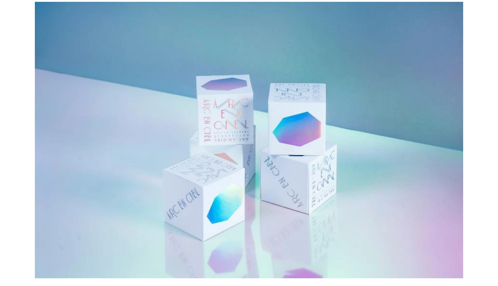

食・農 / 文化
食在有藝 Arc&Art

PROJECT INFORMATION
「食在有藝 Arc&Art」のブランド企画・デザイン、パッケージデザインを担当した実績です。
01 / 背景とテーマ
輪郭を与える
台湾のギフトブランド「食在有藝 Arc-En-Ciel」。ブランド名のArc-En-Cielは、フランス語で「虹」を意味します。食と芸術をつなぐという抽象的な理念を、人に手渡せる形にすることが課題でした。掲げたのは “once in a lifetime, love!”。一生に一度の贈りものとして選ばれる菓子をつくる、という前提からブランド全体を設計しています。
02 / SCHEMAの担当範囲
全体を整える
SCHEMAはブランドの企画・設計とパッケージデザインを担当。個装は、ダイヤモンドリングを差し出すように片手で取れる形にしました。箱をひらく、ひとつ摘まむ、相手に渡す——その一連の動作が贈りもののしぐさとして成立するかどうかを基準に、形を決めています。
03 / 取り組みの視点
枠組みをひらく
理念を説明文で伝えるのではなく、包装そのものに語らせる。企画とパッケージの両方に同じ手つきで関わったことで、ことばと形が最後までずれずに残った取り組みです。